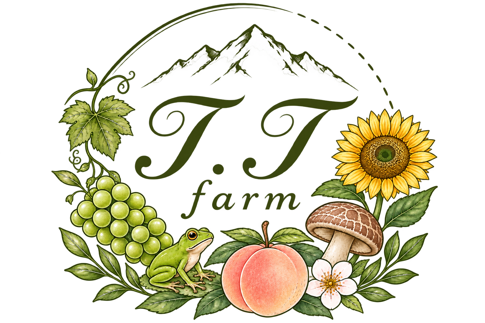
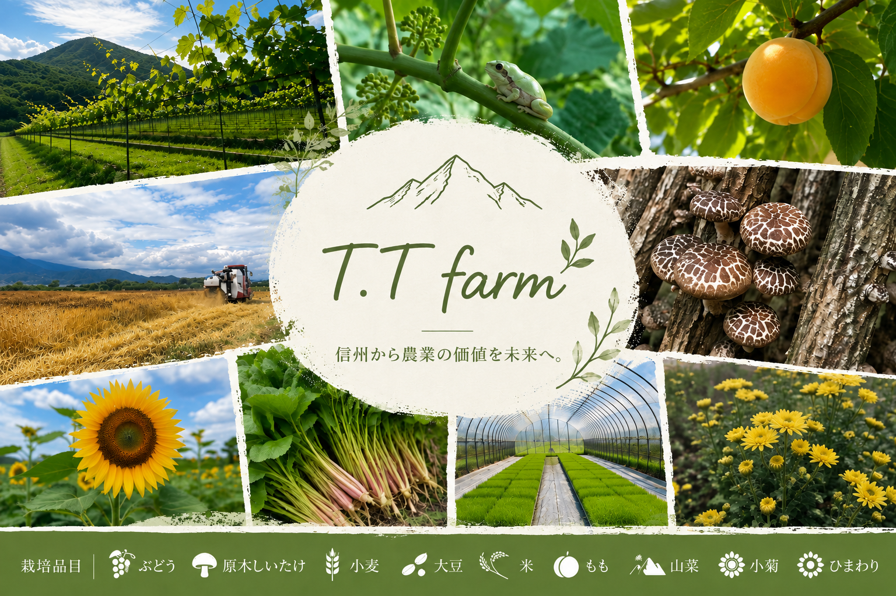
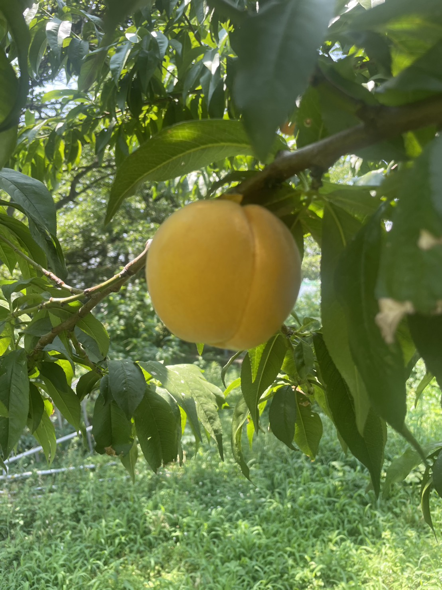
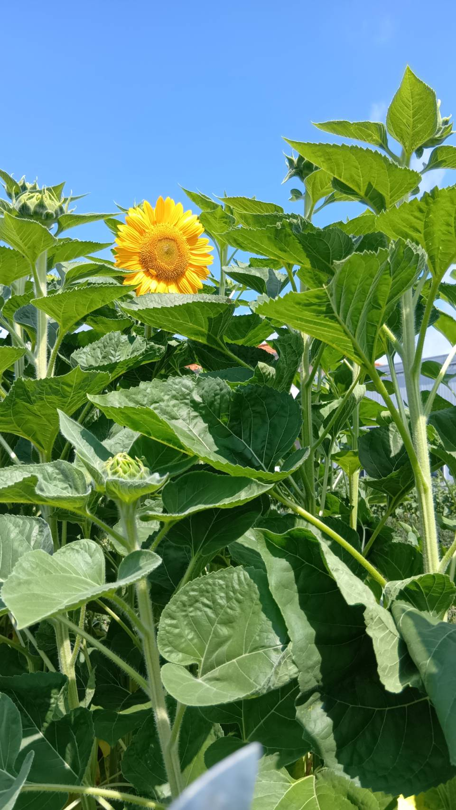
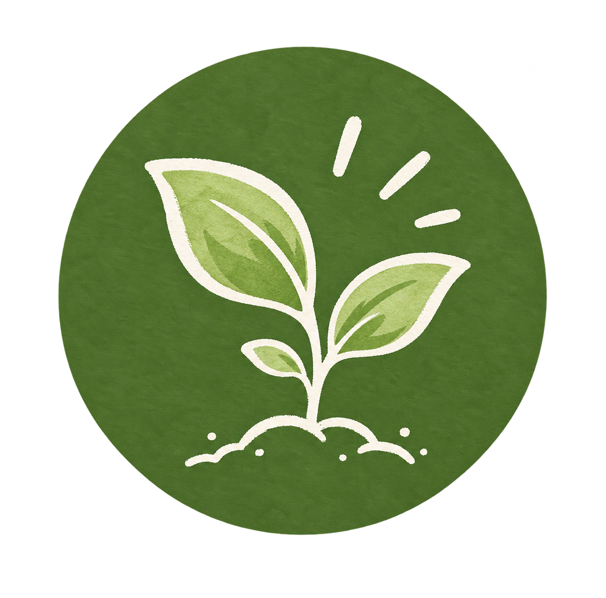
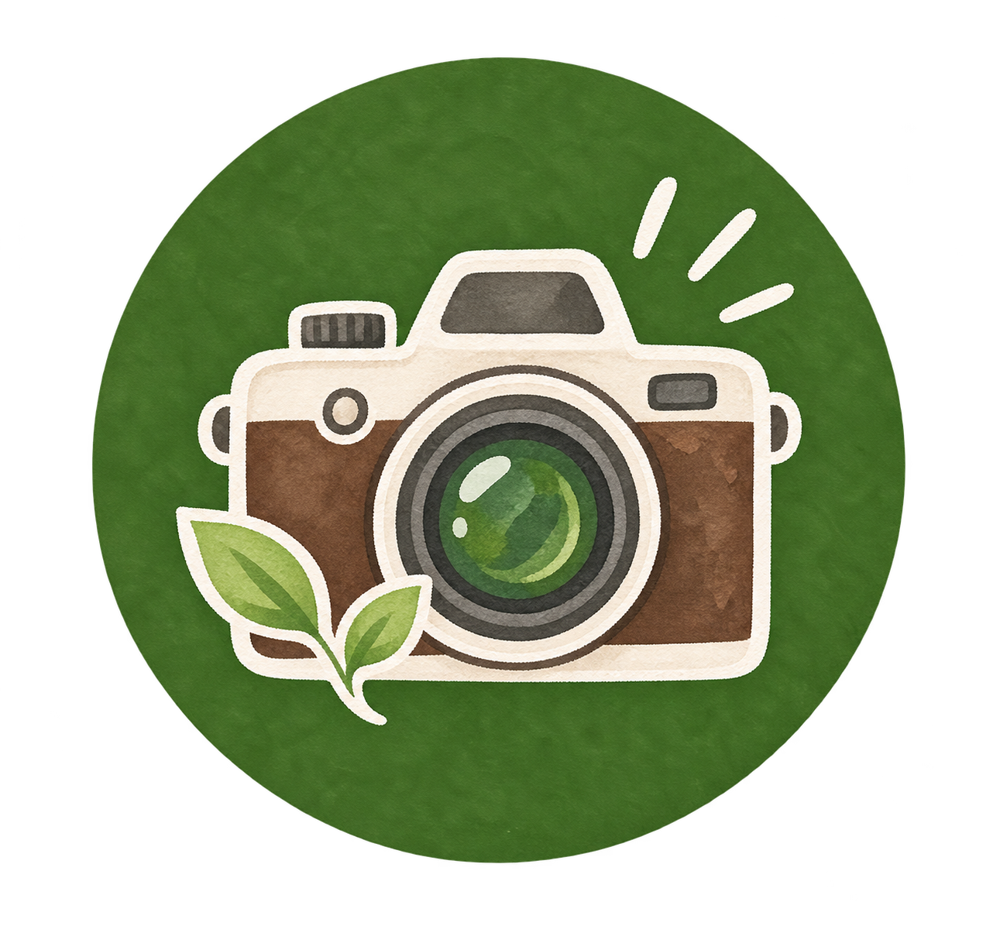
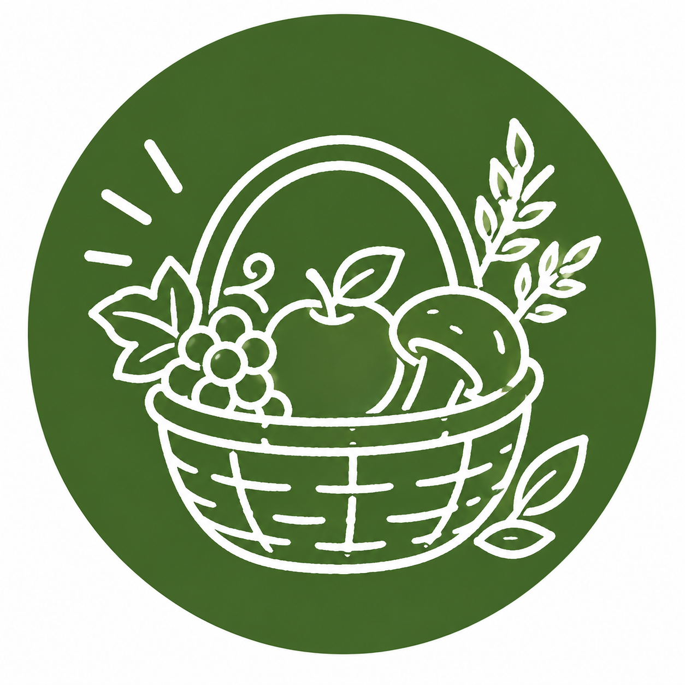

信州から農業の価値を未来へ


クイーンルージュ®、シャインマスカット、ナガノパープル、 クイーンニーナ、ふじのかがやきなどを育てています。

自然の力を生かした原木栽培。 収穫や天日干し、乾燥しいたけづくりの様子も紹介します。

種まきから成長、収穫まで、 季節とともに変わる小麦畑の様子をお届けします。

信州の自然の中で育てる大豆。 種まきから成長、収穫までの様子を紹介します。

コシヒカリやつきあかりを栽培。 田植えから稲刈りまで、米づくりの様子を紹介します。

なつっこ（白桃）、黄金桃（黄桃）を育てています。 花から実が色づき、収穫を迎えるまでの様子を紹介します。

コシアブラ、タラノメ、こごみ、ウド、ふきなど、 信州の春の山菜を紹介しています。

赤魚（赤）、やよい（赤）、ふなじ（黄）、さざ波（白）などを育てています。 植え付けから開花、収穫までの様子を紹介します。

サンリッチオレンジ、サンリッチレモンを育てています。 成長の様子や、夏の畑を彩る花の風景を紹介します。

若手農家が作物や自然と向き合う思い、 T.Tファームの農業について紹介します。

作物の成長、農園の風景、 カエルやサワガニなどの生き物を写真でご覧いただけます。
ぶどうや原木しいたけ、米、小麦などの栽培記録と、 農作業の日常をお届けします。
現役農家が実際の農作業をもとに作った、無料で遊べる農業体験ゲーム。 子どもから大人まで、農業を楽しく体験できます。

T.Tファームで育てた長野県産・信州産の季節の農産物を、 産地直送でお届けします。 通販・お取り寄せはこちらから。